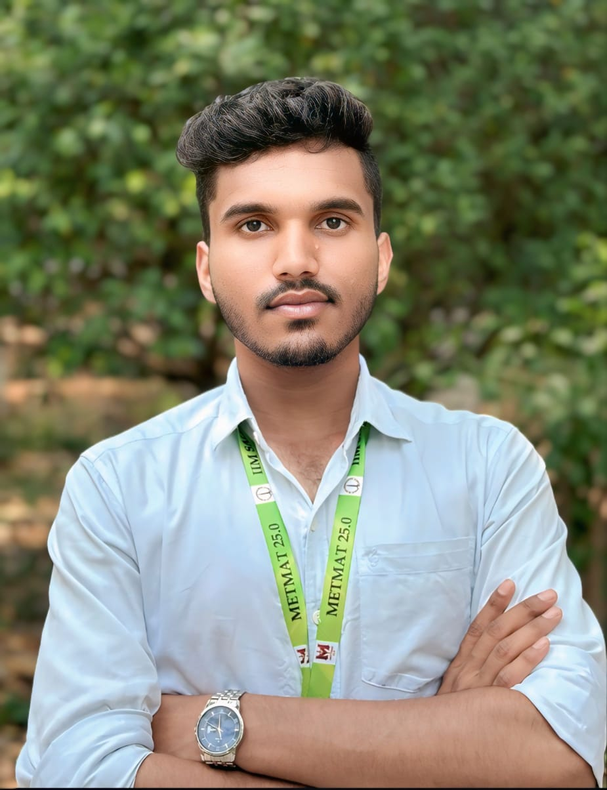

About Me

Bio Data
Name: Deepan S
Field: B.E Metallurgical Engineering, 3rd Year
Interests: Additive Manufacturing, Materials Processing, System Design Thinking
Affiliation: NSS Volunteer
Technical Skills
- Heat Treatment Processes.
- MIT App Inventor – App Prototyping.
- Mechanical Testing.
- Additive Manufacturing
- Laser cutting.
- Welding and Fabrication Techniques.
- HTML, CSS, Electronics Integration with ESP8266.
Future Vision and Goals
My long-term goal is to build a sustainable and innovative metal manufacturing startup that caters to advanced industries like defense, aerospace, and biomedical. I aspire to contribute to the evolution of Additive Manufacturing in India and enable precision fabrication using indigenous technologies. I also envision creating educational platforms that bridge the gap between engineering students and industrial practices.